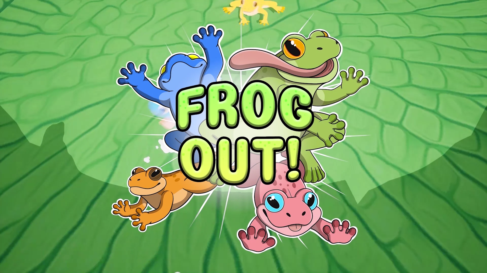

After having read about some of the practices of more traditional software developers, there was a lot of things we wanted to do better after Drive Ahead!. There were a few things we knew from the get-go, no more branching for features, implementing the MVP pattern for cohesive UI implementations and using a Dependency Injection framework (VContainer). These were all great on paper, but it took a really long time of developing with these new patterns on how to really to get the benefits out of them.
During the ealry development of Carcade, I wanted to try out pair programming and had tried to bring it in as an experiment. It was very hard to get anyone advocating the practice with me, so the experiment fell through. It wasn't until Sipi Raussi joined the company, that I had another advocate for the practice. Me and Sipi started pair programming together, and at first it was truly exhausting! The level of active thought and conversation it took was something both of us had underestimated. But that tight collaboration brought into view all the nuances of the problems we were working on, and how we thought differently of them and how we ultimately came to a conclusion or compromise that we both agreed on! After a few weeks of this, we got significantly better at communicating our design ideas and coming to working solutions much faster than if we would've worked individually. We made sure to change pairs every 2 sprints or so, gradually making the practice more of a standard in the team.
Story time. Me and Sipi were pairing on a new feature called 'Limited Time Events'. A simple feature (clueless) where the player plays some amount of matches, claims a predetermined reward and another event becomes available after a cooldown period. The further we got into the details and edge cases of the system, the more we realized that manual testing wasn't gonna cut it anymore. The system was depended on wall clock time, so of course it had to take into account a ton of edge cases regarding the players actions. The most complicated being, how to handle all the possible states the game is left in when the game is closed? How should the system determine the new state when re-launching the game? What about when the player doesn't claim their reward from the event and closes the game? This is only a handful of the problems we came up against, and we were constantly running into roadblocks regarding the design of the system.
The complexity of the system had reached a tipping point, where neither of us could hold all the details of the problem in our working memory and thus made any further progress significantly slower. There simply were too many states to consider! The solution was to build unit tests around all of these complicated edge cases, so that we were sure that it worked as we had intended. This led us to discover that a lot of the parts of our system was very hard to test. Figuring out how we wanted to assert that our system worked was the first step to improving the design, and took a lot of thinking. Up until this point, we had worked on the feature for a few sprints already, I thought that changing the design and writing the unit tests would be a big undertaking. I was very pleasantly surprised that once we got the hang of writing unit tests, we wrote tests for the system in less than a week! The feature was not yet complete at that point, we had just verified that what we wrote previously actually works. Armed with this knowledge, we finished the feature for the planned release, despite switching gears midway to writing unit tests for the system.
Towards the end of the project, our senior programmer left the company, and we had to pick up the slack with his prior responsibilities. In practice, this meant managing our in house CI/CD environments and handling Metaplay infrastructure updates in the original Drive Ahead game.
winning!